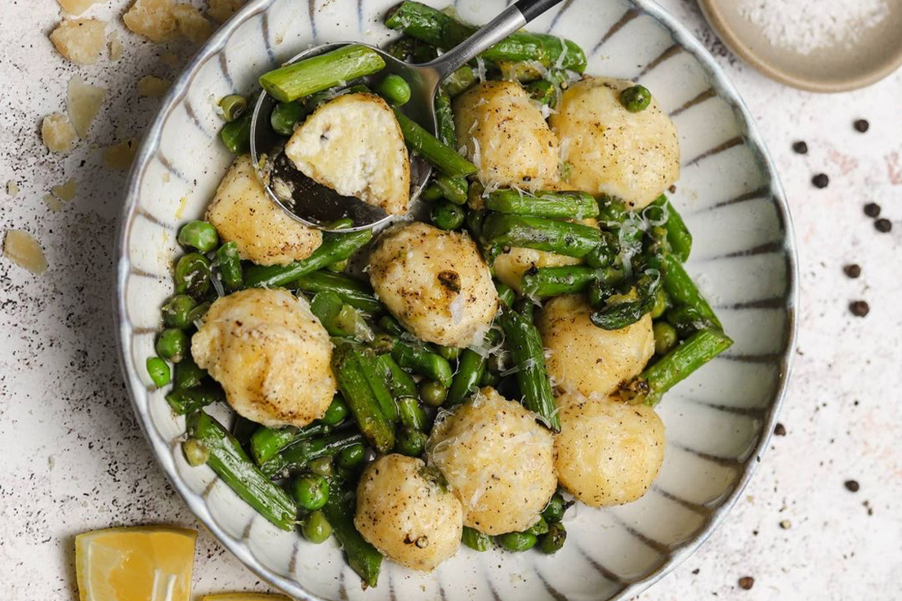

Making gnudi, or Italian ricotta dumplings, only sounds fancy.
Here, we've amped up gnudi with a browned butter sauce, peas (fresh or frozen work), and crispy mint.
Ingredients
- 2 c. whole-milk ricotta
- 1 c. freshly grated Parmesan, plus more for serving
- 2 eggs, beaten
- Kosher salt
- 1 c. all-purpose flour, divided
- 1/2 c. (1 stick) butter
- 16 to 20 fresh mint leaves
- 11/2 c. sweet peas, fresh or frozen and defrosted
Recipe Instructions (Steps)
- Line a baking sheet with 3 or 4 layers of paper towels.
Evenly spread ricotta on paper towels. Lay more paper towels on top of ricotta and use
your hands to blot excess moisture.
- Transfer ricotta to a large mixing bowl. Add Parmesan, eggs, 1 teaspoon salt,
1 tablespoon black pepper, and 1/2 cup flour and stir to combine.
- Clean baking sheet and line with parchment paper.
Spread 1/4 cup flour on parchment with your hands.
Scoop level tablespoons of gnudi dough into your
floured hands and gently roll each into a ball.
Place on baking sheet. Repeat with remaining dough,
adding more flour as necessary.
- Sprinkle remaining 1/4 cup flour on top of gnudi. Gently roll gnudi in flour until coated.
- Transfer baking sheet to refrigerator for at least 1 hour and up to 1 day.
- When ready to cook, fill a large pot with 2" water and bring to a boil.
Season with 2 large pinches of salt. Using a slotted spoon,
gently add gnudi to pot, in batches to avoid overcrowding,
and cook until they float to the top, 2 minutes. Transfer to a large serving plate.
- Meanwhile, in a large skillet over medium heat, brown butter, slowly whisking, 5 to 6 minutes.
Once it begins to lightly brown, add mint and let crisp, 1 minute. Transfer mint to a small plate.
- Add peas to skillet and cook until slightly soft, 2 to 3 minutes.
- Spoon peas and browned butter over gnudi and top with crispy mint leaves and Parmesan.
Season with salt and pepper.
Return to top
Main page